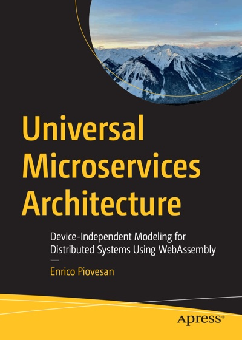

Logic fragments across runtimes
Developers duplicate the same logic across client, server, and edge stacks, creating drift, inconsistent UX, and wasted effort.
Device-Independent Modeling for Modern Software Design with WASM
Universal Microservices Architecture (UMA) is a software architecture pattern for building portable microservices: distributed systems where each business capability is packaged as a portable, self-describing service that can execute across browser, edge, cloud, workflow, and AI-assisted environments without duplicating logic or losing behavioral coherence. Universal Microservices Architecture (UMA) separates the portable service contract from the runtime host, using active descriptors to govern placement decisions and adapter layers to translate between the contract and the host environment. The result is a system where the same business rule (a pricing formula, an eligibility check, a validation step) runs identically whether invoked from a server, a mobile client offline, or an AI agent, with no separate implementation for each target.

HOW UMA WORKS
Each business capability is packaged as a portable WASM module with an active descriptor. The runtime layer validates, places, and governs execution identically across browser, edge, cloud, or AI agent.
RUNTIME PLACEMENT
The same WASM service, loaded from a shared registry, runs where it fits. Each client's runtime decides independently — on device when it can, deferred to the server when it can't.
WHY UNIVERSAL MICROSERVICES
Traditional monolith, microservice, frontend, and backend boundaries do not solve the newer problem: the same business behaviour now has to survive across web, mobile, server, edge, and AI-driven execution contexts.
Developers duplicate the same logic across client, server, and edge stacks, creating drift, inconsistent UX, and wasted effort.
Placement, transport, adapters, and orchestration decide outcomes, but those decisions rarely stay visible in the system model.
Security, enforcement boundaries, and provenance often get layered on after the fact, when portability is already producing risk.
Version sprawl, duplicated behavior, and runtime drift make distributed systems harder to scale, reason about, and sustain.
UMA treats service logic, contracts, runtime policy, transport, security, and observability as one architectural system. The book and the repo are designed to make that model visible, teachable, and runnable.
The shortest portable summary is not “write once, run everywhere.” It is: write once, run where it makes sense.
If you want the shortest explanation of the gap UMA addresses, start with what problem UMA solves. If you already agree with the gap, move straight into the reference app or the examples.
WHAT YOU CAN DO WITH UMA
A cold reader should be able to answer one question quickly: what does UMA let me do that is still painful in a typical stack-first system? These are the concrete outcomes the site, repo, and reference app are trying to prove without requiring you to adopt the whole model at once.
Keep the core behavior stable while browser, edge, cloud, and WASI runtimes change around it.
Make proposals, approvals, rejections, and trace artifacts visible instead of burying them in framework glue and logs.
Use agents for proposal and ranking while the runtime stays authoritative over validation, policy, and final execution.
WHY UMA FEELS DIFFERENT
UMA is not trying to replace Kubernetes, service meshes, or WebAssembly tooling. It is trying to answer a different architectural question: how do you keep one behavior coherent as it crosses many runtimes, policies, and workflow surfaces?
WHAT YOU WILL LEARN
The book explains the principles and building blocks of UMA, how it differs from older architectural models, and how to design enterprise applications that are portable, modular, and runtime-agnostic using WebAssembly.
Learn how to structure, compile, version, and preserve business logic across environments without binding it to one stack.
Understand transport layers, contracts, orchestration, trust boundaries, and operational patterns for distributed execution.
See how UMA scales across domains, teams, and AI-generated workflows without turning into fragmented delivery pipelines.
CORE CONCEPTS
If you want to understand UMA without jumping straight into the full repo or book flow, start with these concept pages. They explain the minimum vocabulary behind the reference app and the later chapters.
Why the durable unit of architecture can no longer be only the stack that runs the code.
The smallest useful UMA question: what has to stay stable before a service can really move across runtimes?
Why portability should be demonstrated from observable parity, not assumed from shared code.
The runtime’s unit of discoverable, contract-shaped behavior.
The runtime-approved path built from capabilities to satisfy a goal.
The governed layer that discovers, validates, approves, and explains execution.
Why proposals, validation, approval, and trace need to stay queryable instead of disappearing into runtime internals.
The concrete split between pure service behavior and validation, adapter binding, and lifecycle evidence.
How events, policies, and metadata shape runtime flow without collapsing back into hidden workflow glue.
Why a system can still function while becoming architecturally unclear, fragile, or harder to recover.
How drift, duplication, version sprawl, and governed coexistence fit into one evolution pattern.
The visible discovery surface that exposes capabilities to the runtime.
Why planning and architectural authority must remain separate.
Where UMA changes the architectural center of gravity.
READER LEARNING PATH
Every stop answers one concrete architectural question before sending the reader to the next concept.
Sets up the problem UMA addresses: platform drift, brittle delivery models, and repeated business behavior across stacks.
Connects the conceptual problem to a portable, runtime-agnostic service model that can survive across environments.
See validation, adapter binding, and lifecycle evidence around a pure service.
Watch policy, subscriptions, and telemetry shape a distributed flow.
Introduce identity, permissions, provenance, and runtime trust decisions.
Follow drift, duplication, version sprawl, and runtime-governed recovery.
Reframes design around portable behavior, contracts, and runtime responsibilities instead of fixed application boundaries.
Start with one contract, one service, and deterministic rule evaluation.
Compare the same service across native and WASI with observable parity.
See a service graph emerge from compatibility and change over time.
Compare coherent and degraded designs through runtime-visible outcomes.
Close the journey by making projections, proposals, validation feedback, and trace artifacts visible end to end.
Finish the path with a Rust-first reference experience that discovers capabilities, validates proposals, coordinates events, and delivers a French report.
HANDS-ON
Universal Microservices Architecture is not presented as theory alone. The book is backed by a maintained GitHub repository with practical, chapter-by-chapter examples that let readers see the model in action. Instead of stopping at principles, the material continues into runnable labs, validated flows, and implementation parity across the examples.
The result is a learning experience that moves from explanation to execution: read the concept, inspect the code, run the tutorial, and see how UMA behaves across real examples.
Code samples
UMA-code-examples - GitHubStart with one portable UMA service and understand its contract, rule evaluation, and deterministic output.
Wrap that pure service logic in a runtime layer that owns validation, adapter binding, and lifecycle evidence.
Prove portability by comparing the same service across native and WASI execution with observable parity.
Let metadata, policy, and event subscriptions shape orchestration instead of hardcoded process flow.
See how compatible services form a graph and evolve without hidden rewiring or brittle orchestration.
Introduce identity, permissions, provenance, and runtime trust decisions into the portable execution model.
Compare coherent and degraded designs by making architectural tradeoffs visible through runtime outcomes.
Follow drift, duplication, version sprawl, and runtime-governed recovery in a system that keeps evolving.
Make projections, proposals, validation feedback, approved execution, and trace artifacts discoverable as first-class outputs.
Discover distributed capabilities through MCP descriptors, coordinate them through the UMA runtime, and produce a structured French report with authoritative validation.
WHO THIS BOOK IS FOR
It provides a concrete model for decoupling software design from platform constraints while preserving architectural clarity.
It turns contracts, transport, policy, and placement into visible operational design choices instead of hidden runtime detail.
It offers a practical path to scaling client applications, aligning teams, and preparing for modular AI-assisted workflows.
UMA BLOG
Read the full publication on Medium.